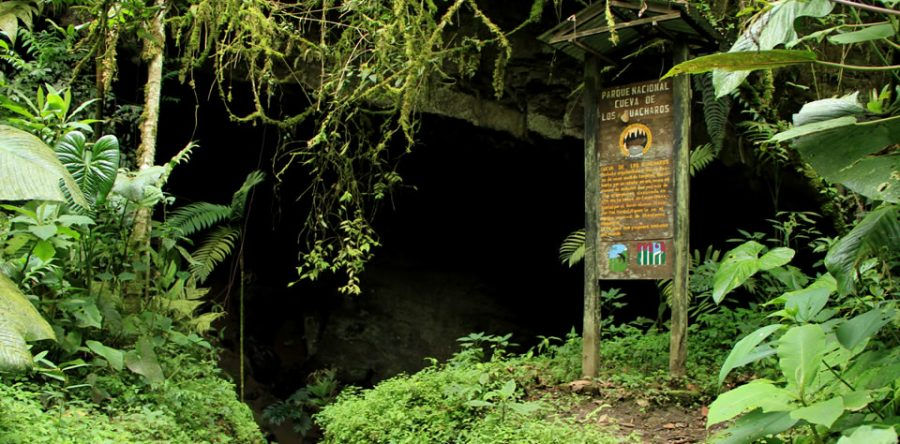
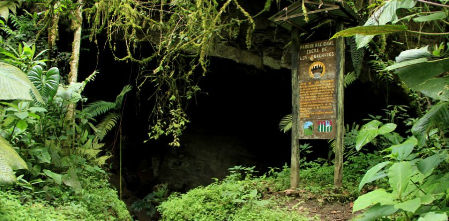

Cueva de los Guácharos
 

Adéntrate en las profundidades de la tierra y descubre la magia de la Cueva de los Guácharos. Este enigmático mundo subterráneo te sorprenderá con sus formaciones rocosas, ríos subterráneos y una biodiversidad única. Hogar de los famosos guácharos, aves que emiten un peculiar sonido que resuena en la oscuridad, esta cueva te ofrece una experiencia inolvidable. Realiza un recorrido guiado y déjate envolver por la atmósfera mágica de este lugar, un verdadero tesoro natural.